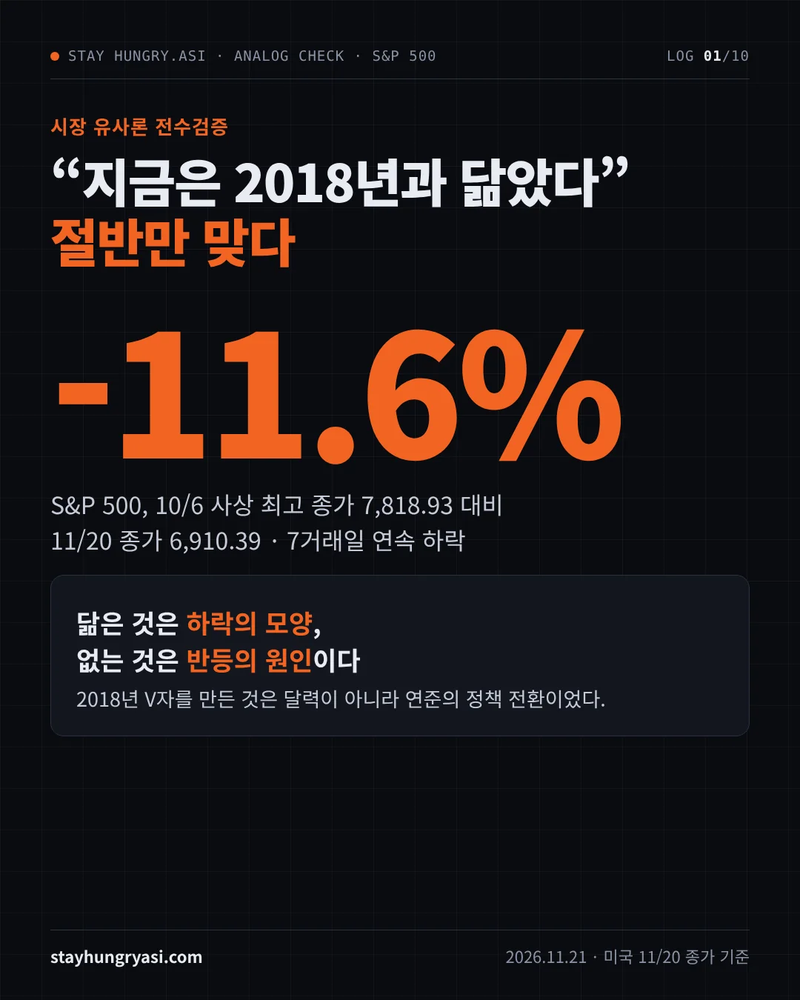
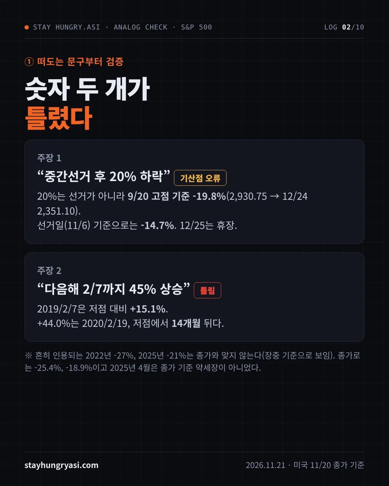
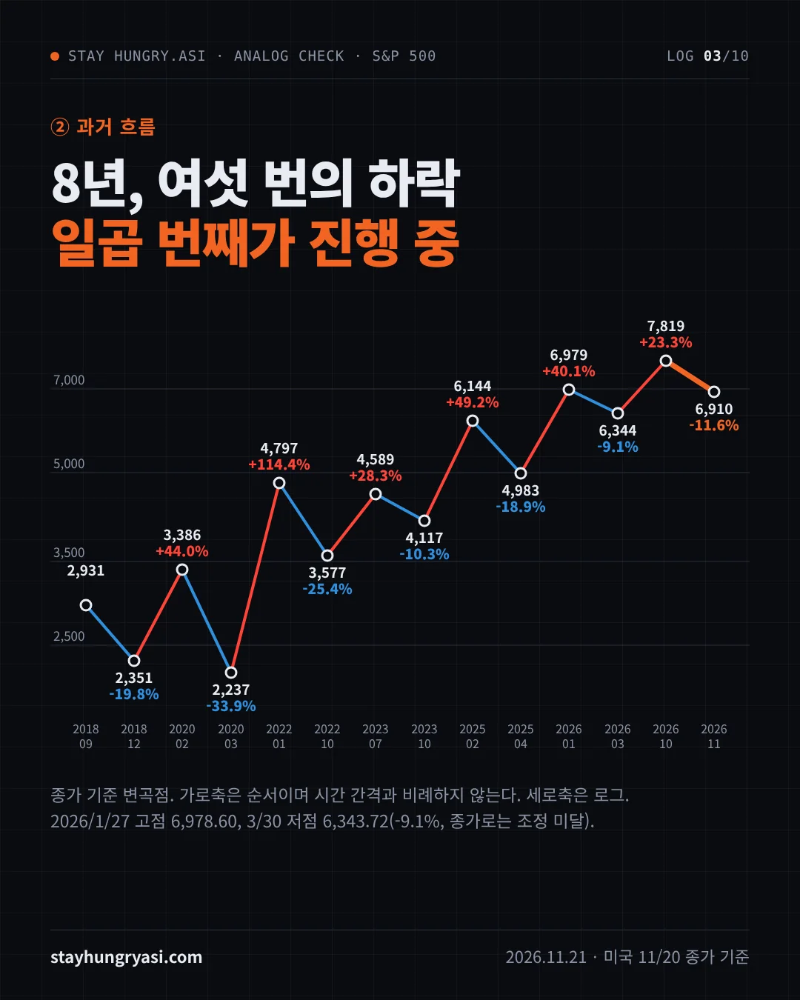
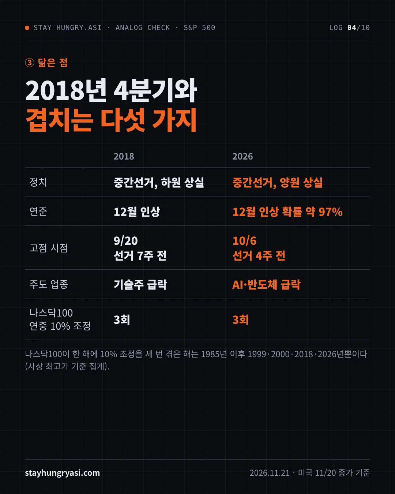
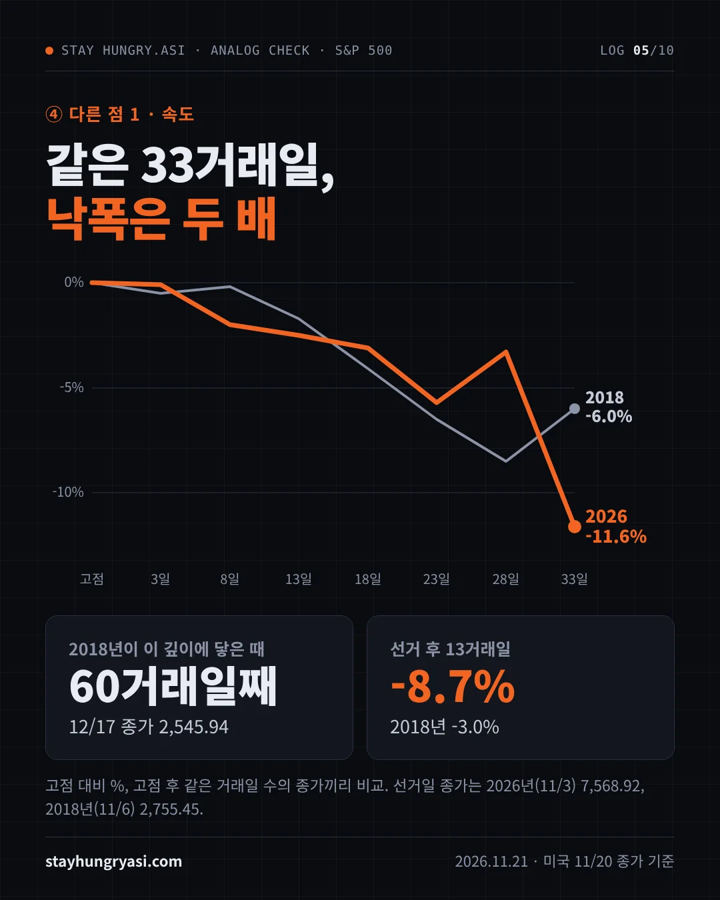
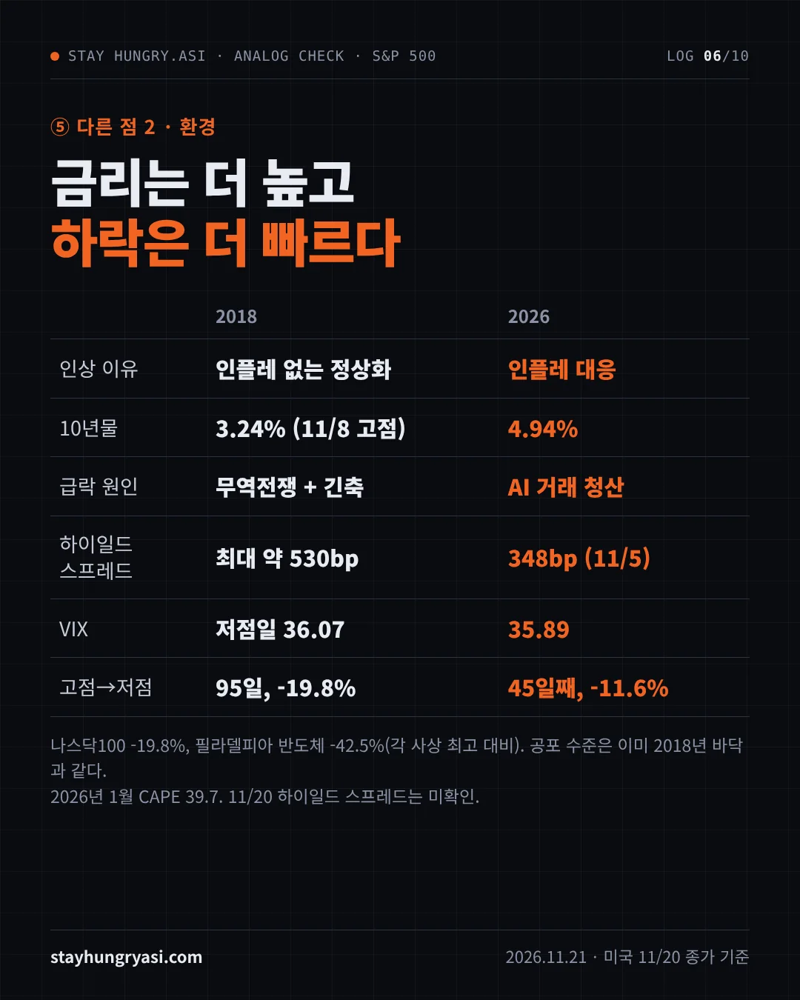
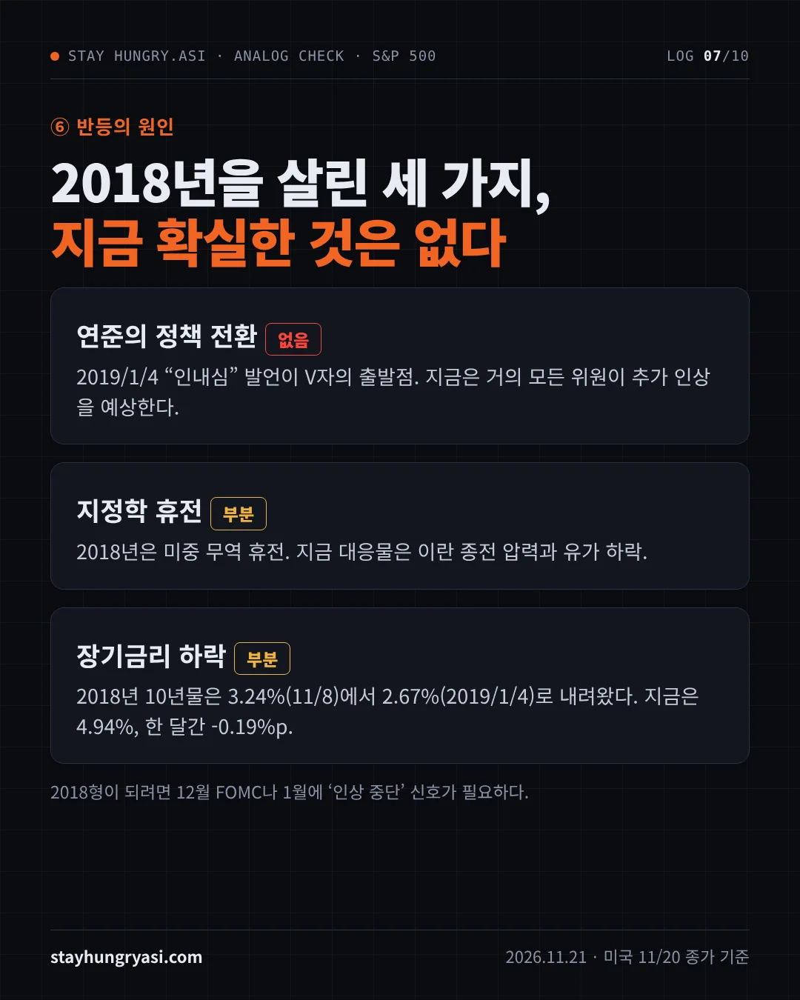
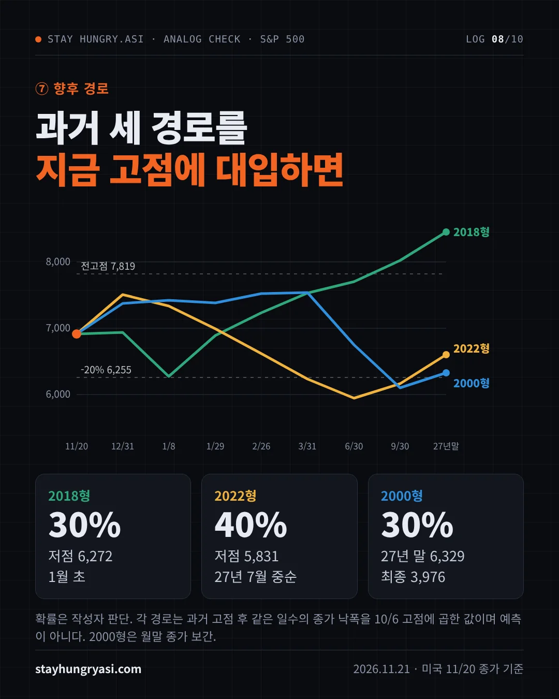
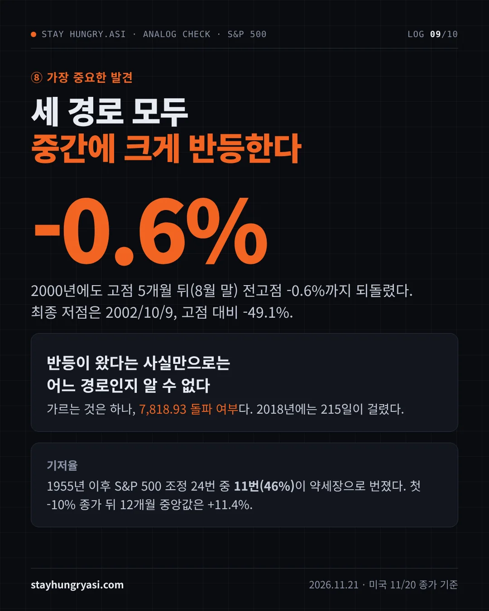
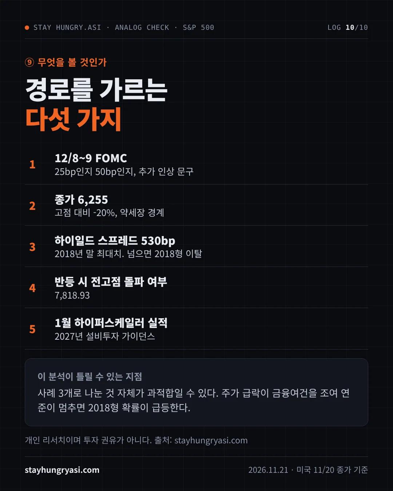

데이터 기준 2026년 11월 21일(한국 시간), 미국 11월 20일 종가 · stayhungryasi.com
표기 규칙: 지수는 모두 종가이며 일별 종가표와 대조했다. 경로별 확률은 작성자의 주관적 판단이고, 경로의 지수 수준은 과거 낙폭을 대입한 값이지 예측이 아니다. 확인하지 못한 항목은 '미확인'으로 적었다. 투자 권유가 아니다.
핵심만 10장으로 요약했다. 이미지를 누르면 크게 볼 수 있다.










| 주장 | 종가 기준 실제 | 판정 |
|---|---|---|
| “중간선거 후 20% 하락” | 2018-09-20 2,930.75 → 2018-12-24 2,351.10 = -19.78%. 선거일(2018-11-06) 2,755.45 기준 -14.67%. 12월 25일은 휴장 | 20%는 고점 대비. 선거 후는 약 15% |
| “다음해 2/7까지 45% 상승” | 2019-02-07 2,706.05 = 저점 대비 +15.10%. 2020-02-19 3,386.15 = +44.02% | 틀림. 14개월 걸림 |
※ 흔히 인용되는 2022년 -27%, 2025년 -21%는 종가와 맞지 않는다(장중 기준으로 보임). 종가로는 -25.4%, -18.9%이고 2025년 4월은 종가 기준 약세장이 아니었다.
| 고점 | 저점 | 낙폭 | 직전 저점 대비 상승 |
|---|---|---|---|
| 2018-09-20 2,930.75 | 2018-12-24 2,351.10 | -19.8% | - |
| 2020-02-19 3,386.15 | 2020-03-23 2,237.40 | -33.9% | +44.0% |
| 2022-01-03 4,796.56 | 2022-10-12 3,577.03 | -25.4% | +114.4% |
| 2023-07-31 4,588.96 | 2023-10-27 4,117.37 | -10.3% | +28.3% |
| 2025-02-19 6,144.15 | 2025-04-08 4,982.77 | -18.9% | +49.2% |
| 2026-01-27 6,978.60 | 2026-03-30 6,343.72 | -9.1% | +40.1% |
| 2026-10-06 7,818.93 | 2026-11-20 6,910.39 (진행 중) | -11.6% | +23.3% |
2022-01-03 종가는 자료에 따라 4,796.56과 4,796.59가 있어 4,796.56을 썼다. 고점에서 신고가까지 걸린 기간은 2018년 215일, 2020년 181일, 2022년 746일, 2025년 128일이다.
| 항목 | 2018 | 2026 |
|---|---|---|
| 고점 후 33거래일 | -6.0% (2018-11-06) | -11.6% (2026-11-20) |
| -11.6%에 닿은 시점 | 60거래일째 (2018-12-17, 2,545.94) | 33거래일째 |
| 선거 후 13거래일 | -3.0% (2,755.45 → 2,673.45) | -8.7% (7,568.92 → 6,910.39) |
| 12월 연준 | 인상 후 2019-01-04 전환 | 인상 확률 약 97% |
| 10년물 | 3.24% (2018-11-08) → 2.67% (2019-01-04) | 4.94% (2026-11-20) |
| 하이일드 스프레드 | 최대 약 530bp | 348bp (2026-11-05), 2026-11-20은 미확인 |
| VIX | 36.07 (저점일) | 35.89 |
| 선행 지수 | - | 나스닥100 -19.8%, 필라델피아 반도체 -42.5% |
같은 거래일 수 비교(고점 후 3·8·13·18·23·28·33거래일): 2018년 -0.5, -0.2, -1.7, -4.1, -6.5, -8.5, -6.0%. 2026년 -0.1, -2.0, -2.5, -3.1, -5.7, -3.3, -11.6%.
| 2018년 반등 원인 | 지금 | 근거 |
|---|---|---|
| 연준의 정책 전환 | 없음 | 2019/1/4 “인내심” 발언이 V자의 출발점. 지금은 거의 모든 위원이 추가 인상을 예상한다. |
| 지정학 휴전 | 부분 | 2018년은 미중 무역 휴전. 지금 대응물은 이란 종전 압력과 유가 하락. |
| 장기금리 하락 | 부분 | 2018년 10년물은 3.24%(11/8)에서 2.67%(2019/1/4)로 내려왔다. 지금은 4.94%, 한 달간 -0.19%p. |
2018형이 되려면 12월 FOMC나 1월에 ‘인상 중단’ 신호가 필요하다.
| 시점(고점 후 일수) | 2018형 | 2022형 | 2000형 |
|---|---|---|---|
| 2026-12-31 (86) | 6,936 | 7,502 | 7,376 |
| 2027-01-08 (94) | 6,272 | 7,336 | 7,423 |
| 2027-01-29 (115) | 6,890 | 6,989 | 7,379 |
| 2027-02-26 (143) | 7,229 | 6,615 | 7,525 |
| 2027-03-31 (176) | 7,530 | 6,230 | 7,540 |
| 2027-06-30 (267) | 7,702 | 5,945 | 6,746 |
| 2027-09-30 (359) | 8,023 | 6,167 | 6,103 |
| 2027-12-31 (451) | 8,454 | 6,603 | 6,329 |
| 저점 | 6,272 (2027-01-08 전후) | 5,831 (2027-07 중순) | 3,976 (2029-04) |
| 전고점 회복 | 2027-05 | 2028-10 | - |
각 값은 과거 고점 후 같은 일수의 종가 낙폭을 2026-10-06 고점 7,818.93에 곱한 것이다. 2000형은 일별 자료를 구하지 못해 월간 수익률로 환산한 월말 종가를 보간했고, 그 기준값인 1999년 말 종가 1,469.25는 대조하지 못했다(미확인). 2000년 고점 1,527.46(2000-03-24)과 저점 776.76(2002-10-09, -49.1%)은 대조했다. 2000년 8월 말 종가는 고점 대비 -0.6%였다.
| 경로 | 확률 | 조건 |
|---|---|---|
| 2018형 | 30% | 연준이 인상 중단을 시사, 하이일드 스프레드 530bp 아래 |
| 2022형 | 40% | 인상 지속, 기업 실적은 유지 |
| 2000형 | 30% | 2027년 AI 설비투자 하향, AI 관련 부채 부실 |
1955년 이후 S&P 500 조정 24번 중 11번(46%)이 약세장으로 번졌다. 첫 -10% 종가 뒤 12개월 중앙값은 +11.4%. 반등이 왔다는 사실만으로는 어느 경로인지 알 수 없다. 가르는 것은 하나, 7,818.93 돌파 여부다. 2018년에는 215일이 걸렸다.
사례 3개로 나눈 것 자체가 과적합일 수 있다. 주가 급락이 금융여건을 조여 연준이 멈추면 2018형 확률이 급등한다.